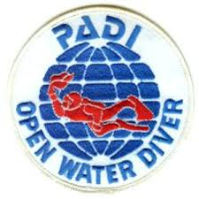

Hello! I am Lee Payne, an experienced technology manager with experiences across the entire technology stack.
I am an experienced technology leader with experience across the entire technology stack including Windows systems, networking, information security, devops and strategic technology leadership. I am looking for a position which can utilize this broad experience to its fullest. My experience as an operational manager has provided opportunities to develop a detail orientated team culture while still seeing the overall team objectives are fulfilled, I have developed and implemented change initiatives to increase the reliability of the technology stack for our business customers.
Azure Devops Expert

Microsoft DevOps professionals combine people, process, and technologies to continuously deliver valuable products and services that meet end user needs and business objectives.
Azure Solutions Architect

An architect can:
Implement and monitor an Azure infrastructure
Implement management and security solutions
Implement solutions for apps
Implement and manage data platforms
Design monitoring
Design identity and security
Design data storage
Design business continuity
Design infrastructure
Azure AI Engineer
An AI Engineer can:
Analyze solution requirements
Design AI solutions
Implement and monitor AI solutions
Azure Security Engineer

An Azure Security Engineer can:
Manage identity and access
Implement platform protection
Manage security operations
Secure data and applications
AWS DevOps Engineer Professional

The Devops Engineer can:
Showcase individuals’ technical expertise in provisioning, operating, and managing distributed application systems on the AWS platform, giving them increased confidence and credibility with peers, stakeholders, and customers. Organizations with these qualified professionals can ensure speedy delivery of secure, compliant, systems that are highly available and scalable.br>
AWS Solutions Architect Professional

An architect can:
Familiarity with AWS CLI, AWS APIs, AWS CloudFormation templates, the AWS Billing Console, the AWS Management Console, a scripting language, and Windows and Linux environments
Ability to provide best practice guidance on the architectural design across multiple applications and projects of the enterprise as well as an ability to map business objectives to application/architecture requirements
Ability to evaluate cloud application requirements and make architectural recommendations for implementation, deployment, and provisioning applications on AWS
Ability to design a hybrid architecture using key AWS technologies (e.g., VPN, AWS Direct Connect) as well as a continuous integration and deployment process
Google Cloud Certified Professional Architect

The Architect can:
Design and plan a cloud solution architecture
Manage and provision the cloud solution infrastructure
Design for security and compliance
Analyze and optimize technical and business processes
Manage implementations of cloud architecture
Ensure solution and operations reliability
CMI Charted Manager

Chartered Manager is all about professional recognition and is the highest status that can be achieved in the management and leadership profession. Chartered status recognizes managers with exceptional management and leadership skills and commitment to Continuing Professional Development (CPD), demonstrating to employers and peers the value of a professional approach that delivers measurable impact.
PADI Openwater diver
The PADI Open Water Diver course includes three parts: Knowledge Development, Confined Water Dives, and Open Water Dives. Knowledge Development covers the principles, concepts and terms you need to know for dive safety and enjoyment. During the Confined Water Dives, you learn and practice scuba skills in a pool or water with pool-like conditions. You'll enjoy making one or more minidives, which take you through the same steps you follow when you make open water dives. To complete training you practice, apply and demonstrate what you learn during four Open Water Dives at a local dive site.
RYA L3 Powerboat (Displacement)
This two-day course provides the skills required when acting as an escort craft, safety boat or coach boat for a fleet of dinghies, windsurfers or canoes, or for racing or training activities.
It includes rescue techniques and elements of race management and mark laying.
Fundamentals of digital marketing

Master the basics of digital marketing with our free course accredited by Interactive Advertising Bureau Europe and The Open University. There are 26 modules to explore, all created by Google trainers, packed full of practical exercises and real-world examples to help you turn knowledge into action.
PRINCE2 practitioner

PRINCE2 Practitioner certification is suitable for anyone managing projects. This could be as part of a formal project management function or a role which involves project management as part of day-to-day work. The Practitioner certification aims to confirm that you have sufficient knowledge and understanding to apply and tailor the method in a range of different project environments and scenarios.
Terraform Associate
The Terraform Associate certification is for Cloud Engineers specializing in operations, IT, or development who know the basic concepts and skills associated with open source HashiCorp Terraform. Candidates will be best prepared for this exam if they have professional experience using Terraform in production, but performing the exam objectives in a personal demo environment may also be sufficient. This person understands which enterprise features exist and what can and cannot be done using the open source offering.
ITIL 4 Strategic Leader

ITIL SL recognizes the value of ITIL, not just for IT operations, but for all digitally-enabled services. Becoming an ITIL 4 Strategic Leader demonstrates that the you have a clear understanding of how IT influences and directs business strategy.
ITIL 4 Managing Professional

ITIL 4 MP has been created for IT practitioners working within technology and digital teams across businesses.
The Managing Professional (MP) stream provides practical and technical knowledge about how to run successful IT enabled services, teams and workflows.
SumoLogic Administrator
Receive critical Administration expertise on how to set up your organization with Sumo Logic as well as how to optimize and manage queries and content to make the whole team more effective.
August 2022 - present
Key Responsibilities:
- Responsible for all managed services engineers within BJSS (45 engineers)
- Responsible for aiding in the resourcing of engineers on engagements
- Run quarterly updates with each engineer individually to ensure they remain on track for their progression
- Implemented a robust career development strategy
- Implemented a progression strategy for the engineers
- Implemented a skills and competency matrix to allow for self identification of training needs
- Implemented Tech-ops reviews of engagements
- Lead the improvement of patching and monitoring across engagements
September 2021 - August 2022
Key Responsibilities:
- Managing three engineers including appraisals and performance management
- Working with development, operational and architectural staff
- Responsible for AWS accounts & budgets
- Responsible for all CI/CD pipeline tooling and golden images
- Centralized password management
- Introduced IaC and reduced deployment time from 4 hours to 15 minutes
- Improved security by migrating by utilizing AWS Session Manager and Azure AD
- Moved build infrastructure to a fully containerized solution
- Migrated build infrastructure to Fargate from docker swarm saving an average 97% OPEX cost
- Put processes in place to perform routine updates and configuration changes
July 2019 - September 2021
Key Responsibilities:
- Managing seven engineers including appraisals and performance management
- Working with development, operational and architectural staff
- Working with business units to understand their needs and requirements
- Restored the function to a fit state after losing their management structure
- Converting a traditional web hosting team to be a Site Reliability Engineering function
- Upskilling the engineers to reduce single points of failure and manage azure
- Developed a comprehensive training plan to prepare for future required skills
- Implemented M365 support into BAU/run teams globally when it was currently unsupported
- Worked with various functions to deploy a chatbot for use by the service desk
March 2018 – July 2019
Key Responsibilities:
- Managing vendor relationships
- Assisting with CAPEX/OPEX requirements for the business
- Managing a portfolio of projects for business improvement
- Managing incidents
- Encouraging project idea generation and development within the team.
- Coaching and developing engineers to reach their full potential.
- Line management of 13 engineers including developing PDP’s and appraisals.
- Managing change management including risk analysis
- Created and managed team skills matrix and identified training requirements.
Major successes:
- Reduced outstanding support tickets by 70%
- Developed a 3-year strategy for the team
- Managed the DR testing exercise for all infrastructure
- Implemented cloud based storage for all operational DR documentation
- Statistically significant higher employee engagement scores
- Implemented a continuous service improvement system
- Utilized Subject Matter Experts to improve the operational environment
- Developed a continuous learning culture for the team
- Developed a system of project control which was adopted by other teams
- Implemented a programme of work which reduced outstanding security issues by 80%
- Merged two disparate teams into one and reduced silos of knowledge with no staff turnover
March 2016-March 2018
Key Responsibilities:
- Managing vendor relationships.
- Assisting with CAPEX/OPEX requirement for the business
- Managing CAPEX budget spend
- Managed a portfolio of projects
- Managing incidents.
- Attending global collaboration meetings as the regional representative.
- Coaching and developing engineers to reach their full potential.
- Line management of 8 engineers including developing PDP’s and appraisals.
- Helped initiate an apprenticeship programme with the HR team.
- Managing change management processes.
- Managing resource utilization within the team.
- Created and managed team skills matrix and identified training needs.
Major Projects:
- Expanded the team from 2 to 8 engineers and ensured we had the correct skills mix
- Worked with the service desk to transition routine duties freeing up 3rd line resources.
- Worked with application support teams to enable them to self service requests enabling business agility and innovation.
- Managed the integration of teams on different sites as part of an acquisition.
- Developed structures and policies to enable a customer focused environment.
- Worked with global teams to achieve a follow the sun model.
- Merged network and voice specialists into a single team and ensured they were cross skilled.
- Created long term development and training plans for all engineers to develop their full potential.
July 2013-March 2016
March 2006 – June 2013
July 2004 – March 2006
Helped manage all the software and hardware of the GP surgeries within the Wiltshire area covering from Bath to Andover and to Swindon
2013 - 2015
The Open University
MBA Stage 1
Managing Technological Innovation
Technology Strategy
Strategic Human Resource Management
Corporate Finance
Project Management
The Management Initiative (Capstone Project)
2015 - 2016
The Open University
Technology Strategy
Technology Strategy Perspectives
Technology planning for strategic position
Entrepreneurship
Learning towards a technology strategy
Power, politics and technology strategy
Culture
Managing Technological Innovation
Environment: opportunity or threat?
Technology, innovation and management
Open innovation
Technology transfer: building value
Eco-innovation
Project management
Managing Technological Innovation Conclusions
2009 - 2015
The Open University
Exploring management
Managing people and organizations
Managing financial resources and performance
Managing marketing
Operational management
Evidence Based Initiative
2014
Chartered Management Institute
Being a Leader
Description: This unit has been designed for learners who want to develop or sharpen their professional edge and enhance personal effectiveness. Learners will evaluate the impact of an organizations structure and governance on management and leadership. They will explore theoretical models, management and leadership styles and approaches designed to promote a culture of mutual trust, respect and support.
Learning outcomes
- Understand factors which impact on an organization's internal environment
- Understand the application of management and leadership theories
- Understand the knowledge, skills and behaviors to be effective in a management and leadership role
Managing Team and Individual Performance
Description: This unit evaluates the reasons for managing performance and the approaches that can be used. It explores methods of rewarding the performance of individuals who exceed expectations, and analyses ways of managing under performance in a professional and supportive manner. This unit focuses on the way performance management, when used effectively, is able to impact on individual and organizational achievement.
Learning outcomes
- Understand the rationale for managing performance within organizations
- Understand frameworks, diagnostic and evaluation tools used for performance management
- Know how to manage performance
Project Development and Control
Description: This unit focuses on the knowledge and skills required to manage projects successfully and overcome problems and challenges. It requires the learner to evaluate the methods and tools for planning tasks and activities, as well as knowing how to implement and manage project activities, build stakeholder relationships, manage resources and risk, monitor progress and report on outcomes.
Learning outcomes
- Understand the role of projects in delivering organizational strategy
- Understand processes for initiating, planning and managing projects
- Understand the factors which contribute to effective project management
Managing Recruitment, Selection and Induction
Description: This unit has been designed to equip learners with an understanding of the factors which impact on recruitment. They will know how to develop plans and strategies for selecting staff, and identify approaches for retaining the best of the best.
Learning outcomes
- Understand the factors that impact on recruitment and selection
- Know how to plan for recruitment and selection
- Understand approaches to the recruitment and selection of a diverse and talented workforce
- Understand strategies for retaining talent
Organizational Financial Management
The aim of this unit is to enable learners to understand how financial systems operate within organizations. Learners will evaluate the sources of finance for organizations, and understand the principles for setting and managing budgets in line with regulatory and organizational guidelines. This unit has been designed to enhance the learner’s confidence and credibility in financial management, which will translate into improved management skills.
Learning outcomes
- Understand finance within organizations
- Know how to set and manage budgets
2005
Swindon College
This course covered the major aspects of first line management including hiring, performance management and basic budgeting, it was the first management course I had taken and was a good overview of being a front line manager.
2000-2004
University of the West of England
Analytical modelling
score: 48
Description: This module covered the discrete mathematics required for the understanding of computer science concepts and to be able to model theoretical constructs.
Component based development
score: 52
Description: This module covered Java EE, java beans and built on previous knowledge of object based programming to culminate in building a e-commerce book site with the ability for people to leave reviews (including a star rating), buy books and register their details to make checkout easier and faster in future.
Computer networks and operating systems
score: 62
Description: This module covered the basics of operating systems and networks, the module had me building the various utilities within an operating system (ls, cd, pwd) and ultimately combining these into a custom shell on the OS, This module also covered the OSI model, IP addressing and routing.
Computer science concepts
score: 77
Description: This module covered the basic concepts for computer science including Big O notation, P vs NP problems, binary arithmetic and basic cryptography
Computer systems
score: 58
Description: This module covered the very basics of computing and the project for this module involved writing a serial port to serial port communication protocol with encryption using x86 assembler.
Computing project
score: 75
Description: This was a research based (rather than developing an application) piece of work where I looked at the creation, development and evolution of web crawlers, how they are used by companies to index the Internet and the ultimately built two different crawlers using different indexing methods to determine which would index the Internet the fastest given an arbitrary start point.
Data structures and databases
score: 54
Description: This module was an introduction to Oracle databases and using it to store information in a efficient way, it examined all aspects of database design to minimize memory and disk usage while still being easily expandable and adaptable.
Declarative programming
score: 58
Description: This was an introduction to declarative programming using PROLOG and helped to understand the differences and benefits of declarative programming.
Design and analysis of algorithms
score: 57
Description: This module looked at writing various sorting algorithms in Java (bubble sort, binary sort, quick sort) as well as different storing mechanisms such as binary tree's.
Formal language processing
score: 76
Description: This module looked at creating intelligent systems using Haskell and LISP, this combined together until ultimately I created a London Underground mapping system to find the quickest route from any two arbitrary points within the network.
Industrial placement
score: Pass
Description: I spent a year working for the NHS in WIltshire and applied some of the topics I had learnt over the past two years in a real world environment.
Information systems application context
score: 65
Description: This module Focused on the business aspects of technology and involved case studies using private industry and the public sector to discuss what went well, what didn't and why.
Interface engineering
score: 58
Description: This module was an introduction to user interface design and showed the different ways information can be conveyed to the end user and when different methods should be used.
Professional, commercial & legal issues
score: 58
Description: This module covered the legal and ethical issues facing computing and required that they were discussed and reasoning given for our viewpoints, the project for this module was a presentation for an ethical business to a group of lecturers acting as angel investors.
Program development
score: 64
Description: This was an introduction to Java programming and Focused on understanding the language and being able to solve problems in an object orientated model.
Software design
score: 56
Description: This module focused on how to design software using UML including the backend systems and the user interface.
Software engineering
score: 48
Description: This module improved upon the first year Java programming module and introduced advanced topics which culminated in writing a vending machine using object orientated principals.
Symbolic processing
score: 67
Description: This was an artificial intelligence module and covered the history of artificial intelligence, it's future and how AI's are built by providing the symbols that they need to process in order to understand the world.
Systems development
score: 69
Description: This module was Focused on web technologies and involved writing a fully functioning website for a company using HTML, perl and the UNIX rdb database.